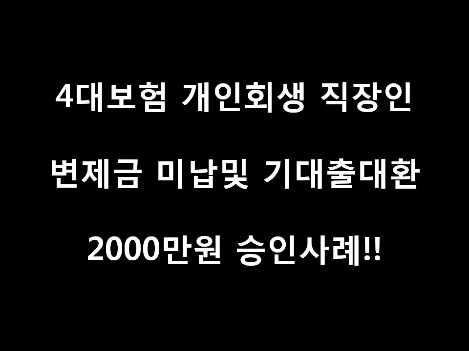
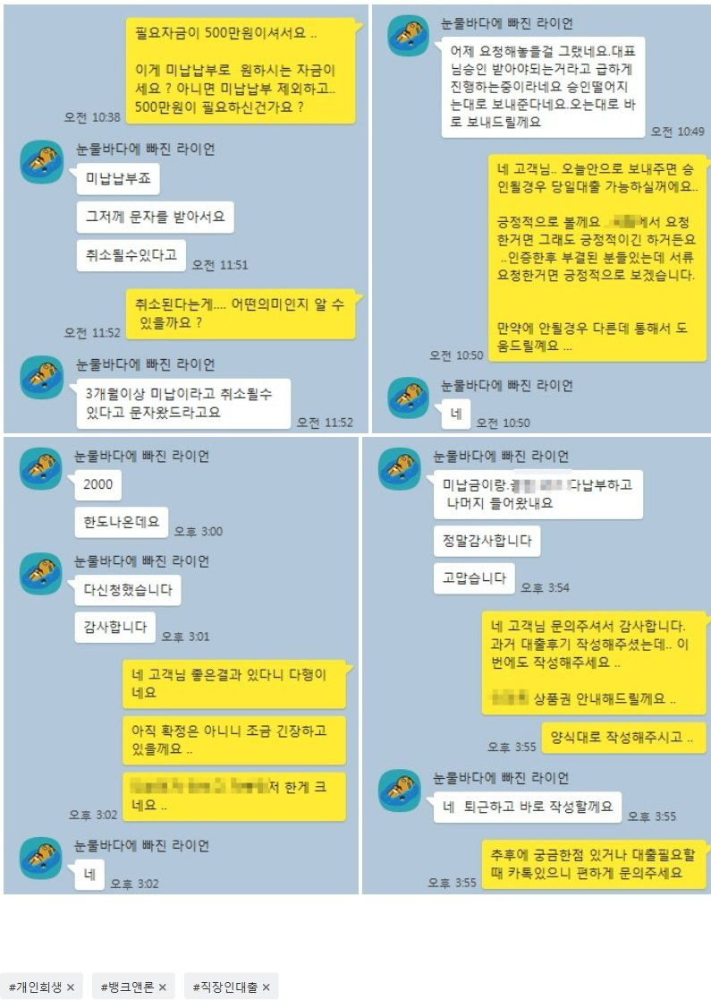

미납5회 4대보험 개인회생직장인 대환및 미납 납부조건 2000만원 승인사례!!

안녕하세요 뱅크앤론 김한수 상담사입니다. 주말에 날씨가 많이 추웠네요 벌써 겨울이 성큼 다가온것 같습니다.
다들 겨울준비를 하셔야 할듯합니다. :)) 오늘은 회생자 대환 상품으로 해서 소개해드리겠습니다.
고객님께서는 4대보험 직장인이시고 급여는 세전220만원 변제금 103만원 36/34 미납5(515만원) 이렇게 조건을 가지고
계신 고객님입니다. 기대출로는 2군데 해서 650만원 입니다.
고객님께서는 남은 2회및 현재 변제금 못낸 5 회까지해서 700만원 정도의 대출 목적으로 문의주셨습니다.
변제금이 꽤 많이 납부하시지만 대출에 대한 연체가 없고 회생도 거의 끝나가서 금리 20% 조건이 아닌 다른 금융사 통
해 알아본 결과 기대출 650만원 대환및 변제금 700만원 납부해서 2000만원 금리15% 조건으로 도움드렸습니다.
700만원정도 생활자금으로도 사용할 수 있게 도움드렸습니다.
이런 경우에는 고객님께서는 면책을 받으신후 추후에도 좀 더 괜찮은 곳으로 할 수 있게 도움드릴 수 있습니다.:))
아래는 저와 고객님의 카톡대화내용입니다. 회생대출이 필요하실때 문의주시면 도움드리겠습니다.
다들 감기 조심하시고 이번 한주도 화이팅해요... ^^
